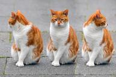
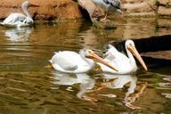

When I pass from earth away,
Palsied though I be and grey,
May my spirit keep so young
That my failing, faltering tongue
Frames that prayer so dear to me,
Taught me at my mother's knee:
"Now I lay me down to sleep,

(Passing to Eternal rest
On the loving parent breast)
"I pray the Lord my soul to keep;"
(From all danger safe and calm
In the hollow of His palm;)
"If I should die before I wake,"
(Drifting with a bated breath
Out of slumber into death,)
Oh! I should ill thy generous cares requite
Thou who didst first inspire my timid Muse,
Could I one tuneful tear to thee refuse,
Now that thine aged eyes are closed in night,
Kind Warton! Thou hast stroked my stripling head,
And sometimes, mingling soft reproof with praise,
My path hast best directed through the maze
Of thorny life:

by thee my steps were led
To that romantic valley, high o'erhung
With sable woods, where many a minstrel rung
His bold harp to the sweeping waterfall;
Whilst Fancy loved around each form to call
That fill the poet's dream: